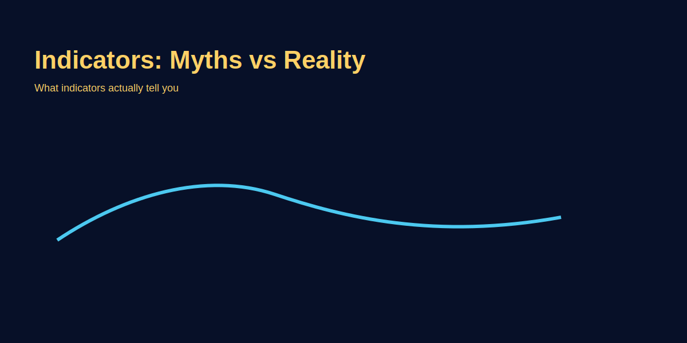

Indicators — Myths vs Reality
Problem-based introduction
Indicators bohot popular hain, lekin kaafi myths circulate karte hain—"indicator X guarantees profits"—jo galat hain. Yeh article practical reality check aur GOLD examples provide karta hai.
Step-by-step explanation
- Indicators are lagging or leading tools—understand the difference.
- Use indicators as filters or confirmation, not as standalone signals.
- Combine with price action and higher-timeframe bias for better results.
Indicator Myth #1: "Indicator X Guarantees Profits"
The Myth: Influencers sell courses: "Buy MACD crossover, 90% win rate!" Or "RSI divergence never fails!" All lies.
The Reality: No indicator has >70% win rate. Here's why: All indicators are lagging (they react after price moves). By the time indicator signals, 30-40% of move is done. Oscillators (RSI, MACD, Stochastic) whipsaw in ranging markets. Trend followers (MA, ADX) lag in fast trends. No indicator works alone.
Practical truth: Indicator win rates:
- MACD crossover alone: 45-50% win rate
- RSI threshold (70/30): 48-52% win rate
- Moving average crossover: 50-55% win rate
- MACD + divergence + daily trend filter: 62-70% win rate
- RSI divergence + support bounce + volume: 60-70% win rate
Indicator Myth #2: "More Indicators = Better Decisions"
The Myth: Traders load charts with 10+ indicators: MACD, RSI, Stochastic, ADX, Bollinger Bands, etc. "More data = better prediction."
The Reality: More indicators = conflicting signals. You see: RSI bullish, MACD bearish, Stochastic neutral, ADX below 25 (no trend). What do you do? Nothing, paralysed. Indicator overload kills decision-making.
The Fix: Use MAX 2 complementary indicators.
- Combo 1 (Trend + Momentum): Moving Average (trend filter) + RSI (momentum confirmation). MA above price = bearish, don't buy. MA below price = bullish, buy on RSI > 50.
- Combo 2 (Momentum + Divergence): MACD (momentum) + RSI (divergence). MACD bullish + RSI divergence at support = high-probability long.
- Combo 3 (Trend + Volatility): ADX (trend strength) + ATR (volatility). ADX > 25 + ATR expanding = trade trend. ADX < 20 + ATR contracting = skip, wait for direction.
Common Indicators: How They Actually Work (Realistic Expectations)
| Indicator | Type | Realistic Win Rate (Alone) | Best Use |
|---|---|---|---|
| Moving Average | Trend Follower | 50-55% | Bias filter (bullish/bearish), not trade signal |
| RSI (14) | Oscillator | 48-52% | Divergence at structure (support/resistance) |
| MACD | Momentum | 45-50% | Divergence warning, histogram for momentum acceleration |
| Stochastic | Oscillator | 45-50% | Confirm oversold bounces (in trending markets) |
| Bollinger Bands | Volatility | 50-55% | Range identification, breakout confirmation |
| ADX | Trend Strength | 55-60% | Filter (skip if ADX < 25, use if ADX > 25) |
Key insight: NONE of these have >60% win rate alone. All become profitable only when combined with price action, structure, and higher timeframe bias.
How To Use Indicators Properly (The Reality Framework)
Step 1: Daily Bias (Macro) — Check daily chart. MA, ADX, trend. Am I bullish or bearish for the day? This is your bias, not your entry.
Step 2: 4H Entry Setup (Micro) — Check 4H chart. Look for: support/resistance level, divergence, breakout, pullback. Indicator helps confirm context, not trigger entry.
Step 3: Entry Confirmation (Price Action) — Wait for candle close, volume, bounce off level. THEN check indicator. "Does the indicator confirm what price action is saying?" If yes, enter. If no, skip.
Example (GOLD):
- Daily: ADX > 25 (trending), MA rising (bullish bias). ✅
- 4H: Price pulls back to 20MA. ✅
- Candle: Bullish pin bar at 20MA. Volume surge. ✅
- Indicator: RSI at 45 (not oversold). MACD above zero (bullish momentum). ✅
- Entry: Long, stop below swing low. Probability 65-70%.
Real trading logic (GOLD example)
Example: Use RSI to avoid buying into overbought conditions on XAU/USD, but rely on support and candle confirmation for timing.
Image-based examples (mandatory)
Annotated charts showing indicator divergence and the price confirmation needed.
Common Mistakes
- Blindly following indicator crossovers without context. MACD crossover bullish on 4H, you buy immediately. But daily trend is bearish, price is near resistance. Counter-trend trade, you stop out. Always check daily bias + structure first.
- Using too many indicators leading to conflicting signals. RSI bearish, MACD bullish, Stochastic neutral, ADX flat. What do you do? Paralysed. Too many indicators = no clarity. Pick 1-2 max.
Pro Tips
- Pick 1–2 indicators that complement your price-action edge and test them. Not because they "look good" but because you've backtested them. MA + RSI on EURUSD 4H = 62% win rate? Keep it. MA + Stochastic = 51%? Abandon. Test before trusting.
- Understand indicator parameters—default settings are not always optimal. RSI (14) is default but may give whipsaws on your pair. Test RSI (21) or RSI (9). Different settings = different results. Customize per pair and timeframe.
Risk Warning
Indicators can mislead in noisy markets—use proper sizing and stop-loss.
SEO FAQs
- 1. Kya indicator se guaranteed profit hota hai?
- No. Indicators have 45-60% win rate alone. NO indicator guarantees profit. Influencers claiming 90% win rate = liars/marketers. Real win rate (with all filters) = 60-70% max. Edge comes from filters + price action + risk management, not indicator magic.
- 2. Kitne indicators use karne chahiye?
- 1-2 complementary indicators. One for trend (MA, ADX), one for momentum/confirmation (RSI, MACD). More = paralysis. Test your combo on 50 trades. If <55% win, change one indicator. Iterate.
- 3. Indicator crossover reliable hai?
- Alone = 45-55% win rate. With daily trend filter + price action = 60-70%. MA crossover in trending market + support bounce + volume = reliable. MA crossover in choppy market = whipsaw. Context is everything.
- 4. RSI 70 pe sell karna chahiye?
- No. In uptrend, RSI can stay > 70 for weeks. Selling at 70 = lose money. Only sell on: (1) Divergence, or (2) Price breaks support. RSI threshold alone = poor signal in trending markets.
- 5. MACD crossover vs divergence: Kaunsa better?
- Divergence > crossover. Crossover = lagging (by the time it signals, move is done). Divergence = early warning (momentum weakening before price reverses). MACD divergence + price action = 65-70% win. Crossover alone = 45-50%.
- 6. Indicator backtest kaise karun?
- Simple: Trade 30-50 setups using your indicator combo. Track: Entry, stop, target, win/loss. Win rate <55%? Change one indicator or add filter. Re-test 30 more. Iterate until 60%+ consistent.
- 7. Stochastic indicator useful hai?
- For confirming oversold bounces in trending markets = yes (60% win). For trading alone in choppy markets = no (40% win, whipsaw). Use Stochastic < 20 + price bounces = enter long in uptrend. Stochastic alone = skip.
- 8. Bollinger Bands trading reliable?
- Bands show volatility zones, not reversals. Don't buy at lower band expecting bounce (can break lower). Use BB for: (1) Range identification, (2) Breakout filter (price above/below band = strong directional move). Combine with price action for entries.
- 9. Moving average type: SMA vs EMA?
- EMA reacts faster (better for 1H, 4H), SMA smoother (better for daily). For trend filter (daily bias): SMA 50/100/200. For entry signal (4H): EMA 20 retest. Different purposes, different MAs.
- 10. ADX indicator kya use?
- ADX > 25 = trending market (trade trends, use filters). ADX < 20 = choppy market (avoid trend-following, use range strategies). Skip MACD crossover if ADX < 20. This single filter raises win rate 55% → 65-70%.